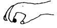

Kuesioner Praskrining untuk 15 bulan
- Tanpa bantuan, apakah anak dapat mempertemukan dua kubus kecil yang ia pegang? Kerincingan bertangkai dan tutup, panci tidak ikut dinilai
- Apakah anak dapat jalan sendiri atau jalan dengan berpegangan?
- Tanpa bantuan, apakah anak dapat bertepuk tangan atau melambai-lambai? Jawab TIDAK bila ia membutuh kemandirian kaq bantuan.
- Apakah anak dapat mengatakan “papa” ketika ia memanggil/melihat ayahnya, atau mengatakan “mama” jika memanggil/melihat ibunya? Jawab YA bila anak mengatakan salah satu diantaranya.
- Dapatkah anak berdiri sendiri tanpa berpegangan selama kira-kira 5 detik?
- Dapatkan anak berdiri sendiri tanpa berpegangan selama 30 detik atau lebih? Tanpa berpegangan atau menyentuh lantai, apakah anak dapat membungkuk untuk memungut mainan di lantai dan kemudian berdiri kembali?
- Apakah anak dapat menunjukkan apa yang diinginkannya tanpa menangis atau merengek? Jawab YA bila ia menunjuk, menarik atau mengeluarkan suara yang menyenangkan
- Apakah anak dapat berjalan di sepanjang ruangan tanpa jatuh atau terhuyung-huyung?
- Apakah anak dapat mengambil benda kecil seperti kacang, kismis, atau potongan biskuit dengan menggunakan ibu seperti pada gambar ini
